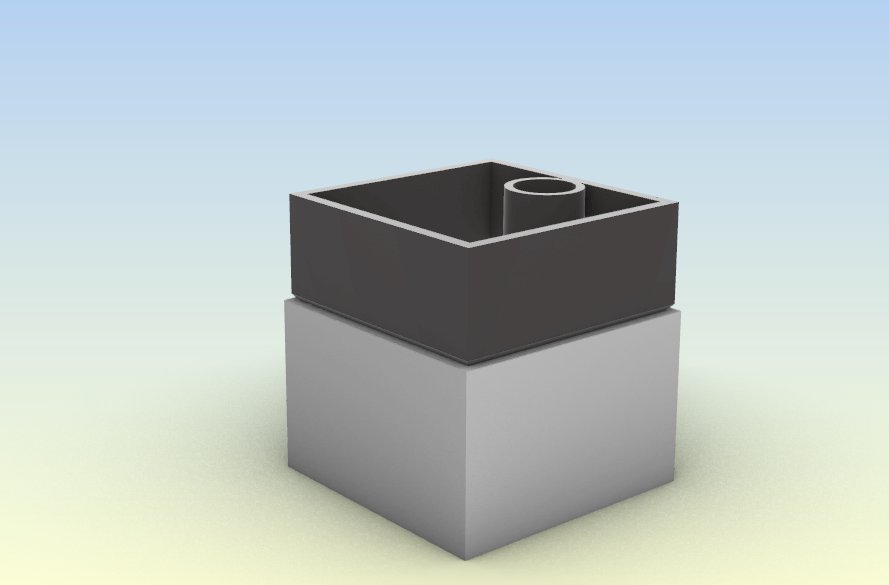

For my final project, I am planning on making a self watering planter! The picture below shows my current idea of how it will look. My motivation behind this is that I suck at watering my plants which leads to them dying. Hopefully, This would be able to help me with keeping my plants alive. A breakdown of the tasks is as follows:
The base could also be 3D printed if there are any issues with the plaster and casting process.
Materials:
